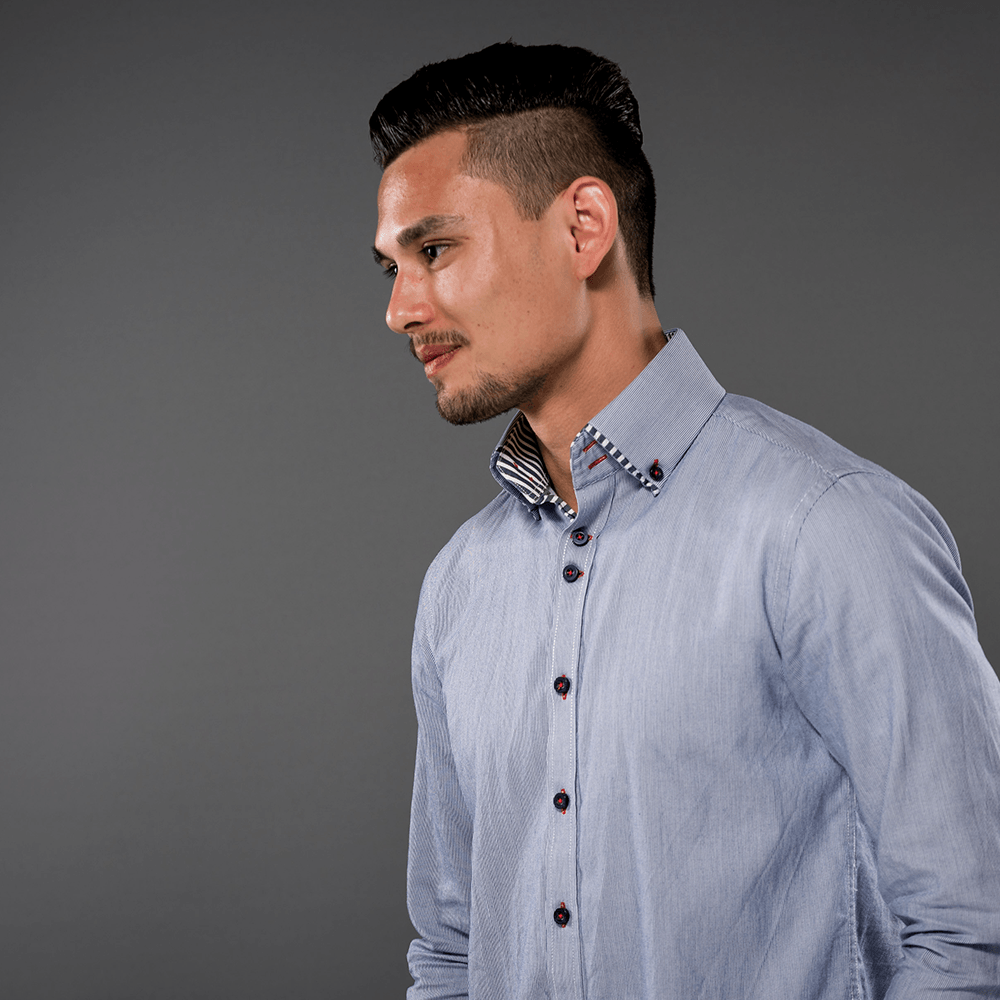
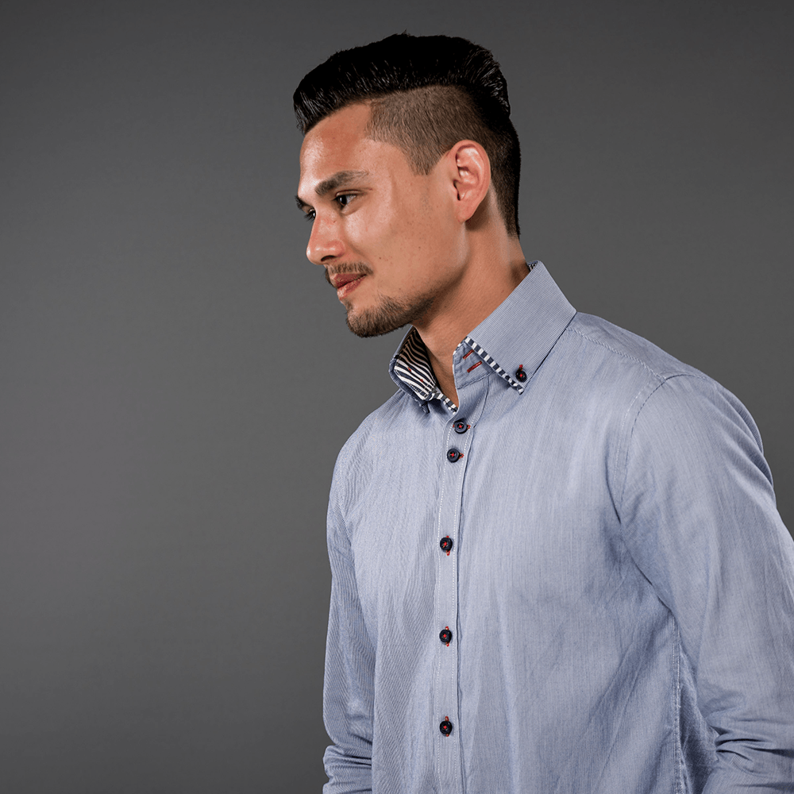

Auf den folgenden Seiten finden Sie spannende Artikel und Interviews mit unseren Professoren zur Veränderung des Studiengangs Print-Media-Management und den Themen Crossmedia und 3D- Druck. Das Team der „PMMinsight – the crossbox.“ stellt sich mit seinen Interessen und den jeweiligen Lebensläufen vor. Die Studierenden berichten von Exkursionen, die Studienanfänger und die Studienabsolventen von ihren Erfahrungen an der Hochschule der Medien. Außerdem haben wir Statistiken zur Mediennutzung durchgeführt, die durch Sie interaktiv erweitert werden können, und unseren Projektverlauf in Zahlen festgehalten.
On the following pages you will find interesting articles and interviews with our professors to the transformation of our study course Print-Media-Management and the topics crossmedia and 3D- printing.
The team of "thecrossbox." presents itself with their interests and their relative Curricula vitae and report on excursions they have made.
Freshmen and graduates tell about their experience at the Hochschule der Medien.
Furthermore we have conduct studies on media using and held our project in numbers.
Unser Studiengang Print-Media-Management bildet zum Wirtschaftsingenieur oder zur Wirtschaftsingenieurin aus. Er beinhaltet managementbezogene sowie betriebswirtschaftliche Inhalte mit gestalterischen und technischen Aspekten.
Nun stellt er einen neuen, gestalterischen Schwerpunkt vor. Neben den Schwerpunkten Packaging und Crossmedia & Print, können sich Studierende im Hauptstudium nun auch für Media Design entscheiden.
Veränderungen tragen Chancen und Möglichkeiten mit sich. Sie sind Elemente der Weiterentwicklung und gehören zum Erfolg dazu.
Im Schwerpunkt Media Design haben die Studierenden die Möglichkeit in umfassendenModulen sich Grundlagen des Designs in Kombination von betriebswirtschaftlichen und technologischen Inhalten anzueignen. In erster Linie werden junge Menschen angesprochen, die neben einem technisch und wirtschaftlich geprägten Verständnis eine hohe Affinität zur Kreativität und zum Design im Medienbereich haben.
Um den neuen Schwerpunkt bestmöglich zu erklären, haben wir diesbezüglich Prof. Dr.-Ing. Witting themenbezogene Fragen gestellt, die er für uns beantwortet hat. Hier erfahren Sie alles über die Vielfältigkeit sowie die Kreativität der Neuausrichtung, außerdem welche Karrierechancen man damit hat und was uns in der Zukunft erwartet.
Cross = quer und media = Medien – somit zeigt sich die Bedeutung von Crossmedia als eine medienübergreifende Kommunikation.
Um Crossmedia-Kampagnen zu analysieren wurden 8 Kriterien entwickelt. Zuallererst sollte es eine über alle eingesetzten Instrumente erkennbare und durchgängige Leitidee oder ein übergreifendes Leitmotiv geben. Des Weiteren sollen formale Gestaltungsprinzipien, die Wiedererkennung von inhaltlichen Aussagen, ein passendes Maßnahmen-Timing, eine optimale Ansicht auf verschiedenen Endgeräten und die Benutzerfreundlichkeit eingehalten werden – kurz: die formale, zeitliche und inhaltliche Integration. Als drittes wichtiges Merkmal soll eine weitest mögliche Ausschöpfung von vernetzten Instrumenten mit einer passenden Hinweisführung gegeben sein. Auch Interaktions- und Reaktionsmöglichkeiten für die Zielgruppen, eine Erweiterung der angesprochenen Sinnesorgane und ein Zielmedium, in das die Konsumenten geleitet werden sollten festgelegt sein. Und zuletzt ein Mehrwert für den Konsumenten und überhaupt die passende Wahl der Medien und Instrumente für die Zielgruppe, das Produkt und die Marke sollten gegeben sein.
Nicht erst seit der Neuzeit oder des Internets, bereits seit jeher kombinierten werbetreibende Unternehmen Kommunikationsmaßnahmen miteinander.
Am 1. Juli 1941 wurden in Amerika erste Sendelizenzen für kommerzielles Fernsehen erteilt, womit am Nachmittag desselben Tages bereits der erste Werbespot im amerikanischen Fernsehen ausgestrahlt wurde – f r die Uhrenfirma „Bulova“. Sie war die erste legale Fernsehwerbung, wobei bereits zwei Jahre zuvor experimenteller Absichten drei Werbespots ausgestrahlt wurden. Somit konnten die Medien Print, Radio (in Amerika seit 1922) und TV als werbetragende Medien genutzt und kombiniert werden. Deutschland ließ sich bezüglich der Werbekanäle TV und Radio bis zum Jahr 1984 Zeit, in dem erste private Fernseh- und Radiosender zugelassen und für das Crossmedia- Marketing genutzt wurden.
Die zahlreichen Faktoren bzw. Kriterien für ein crossmediales Marketing, wie sie heutzutage definiert sind, waren damals jedoch noch unbekannt und wurden vermutlich noch nicht derart umgesetzt. Erst seit der Kommerzialisierung des Internets bekam diese moderne Bezeichnung „Crossmedia“ seine heutige Bedeutung.
Ende der 1990er Jahre verbreiteten sich Text- und Bildmaterialien im Internet durch werbetreibende Unternehmen, seitdem von einer Kombination von klassischen und digitalen Werbemaßnahmen gesprochen werden kann. Ab den 2000er Jahren entstanden Websites zur Information, Websites mit Kommunikationsmöglichkeiten und Online-Shops mit Translationsmöglichkeiten. Ab 2010 kam es zur verstärkten Nutzung Sozialer Netzwerke und ab 2013 zur Verbreitung und Nutzung von internetfähigen Smartphones und Tablets. Seit dem Beginn des Jahres 2015 gibt es immer mehr Bewegtbildkommunikation und somit videolastige soziale Netzwerke. Schließlich verfügen Haushalte meist über 4 oder mehr unterschiedliche Endgeräte, weshalb multiscreenfähige Inhalte gefragt sind und aufbereitet werden müssen.
„Crossmedia“ ist nun aktueller denn je. Es kam zu einer massiven Reizüberflutung, die Zahl der von Konsumenten genutzten Medien steigen immer weiter an und die Unternehmen fokussieren sich trotz paralleler Mediennutzung darauf ihre Kommunikationsziele zu erreichen, welche am besten mit starken, vernetzten und viral verbreiteten Botschaften und Leitideen gelingen.
Einige Kampagnen streben die Erfüllung mancher Kriterien jedoch gar nicht an, weshalb auch zwischen notwendigen und hinreichenden Kriterien unterschieden werden kann. Notwendige Bedingungen sind die Durchgängige Leitidee, die formale, zeitliche und inhaltliche Integration und die Vernetzung, die i.d.R. stets erfüllt werden. Die letzteren fünf Kriterien bzw. Bedingungen fallen unter die hinreichenden, „vernachlässigten“ Kriterien. Einige Kampagnen sind bei genauerem Hinblick nach korrekter Definition demnach „nicht ganz“ crossmedial.
[Grafik von http://www.cross-science.de/2016/03/planung-von-kampagnen.html]
Die zahlreichen Kommunikationsinstrumente können zunächst in folgende Teilbereiche untergliedert werden: Print, Online, Spot, Sponsoring, Werbeartikel, Promotion, Messe, Event, Direct, PR, PoS, Radio, Mobile und Outdoor. Nach zweimaligem segmentieren, zunächst in verschiedene Varianten des jeweiligen Instruments, dann in genaue Verfahren der Varianten, zeigt sich ein Meer von möglichen Werbe- und Kommunikationsträgern.
Schließlich befragten wir Prof. Dr. Wiesener, der in unserem Interview beispielsweise zur Zusammensetzung und Vernetzung dieser Kommunikationsinstrumente und zur voraussichtlichen Etablierung von Crossmedia Stellung nahm.
Mahrdt, N.: Crossmedia, 2009, Wiesbaden
http://www.duden.de/rechtschreibung/crossmedial
http://www.ekapija.com/website/de/page/768336/Der-erste-Werbespot-ausgestrahlt-1941
http://www.startup-report.de/crossmedia-marketing-definition-kampagnen-aktuelle-beispiele/
Wo man nur hinschaut, überall ist die Rede von 3D-Druck. Ob in den Nachrichten, die von 3D- gedruckten Organen berichten, in den Modezeitschriften mit 3D-gedruckter Mode oder im Unterhaltungsfernsehen, in dem 3D-gedruckte Figuren der Casting-Teilnehmer erstellt werden.Doch wie genau funktioniert der 3D-Druck? Um dies zu erläutern werden im Folgenden verschiedene Fertigungsverfahren vorgestellt. Anschließend finden Sie noch ein Interview mit Prof. Dr.-Ing. Hartmann über seine Meinung zur Zukunft des 3D-Drucks.
Für den Druck eines 3D-Objektes wird, wie für den herkömmlichen Drucker auch, eine digitale Datei benötigt, welche die zu druckenden Informationen enthält. Jedoch muss für die Datei eines 3D- Drucks ein bestimmtes Format, wie zum Beispiel CAD (Computer Aided Design) verwendet werden. Bevor jedoch ein Objekt aus einem 3D-Modell aufgebaut werden kann, findet das „Slicing“ statt, wobei das 3D-Modell in zweidimensionale, horizontale Schichten zerteilt wird, welche auch „Layer“ genannt werden. Ein Dateiformat, welches die Informationen für jede einzelne Schicht enthält, ist zum Beispiel eine .STL Datei (Stereolithography Language). Mit Hilfe dieser Dateien, kann der 3D- Drucker ein Objekt aus den einzelnen, horizontalen und zweidimensionalen Schichten drucken.
Die Druckverfahren, die beim 3D-Druck zum Einsatz kommen, können vereinfacht in vier Bereiche aufgeteilt werden: das Pulverdruckverfahren, das Drucken mit geschmolzenen Materialien, das Drucken mit flüssigen Materialien und weitere 3D-Druck Verfahren.
Es wird ein flüssiger Klebstoff, bei dem es sich um die unterste zweidimensionale Schicht handelt, über einen beweglichen Druckkopf auf eine Pulverschicht aufgetragen. Auf diese Schicht aus Klebstoff wird anschließend eine neue, hauchdünne Pulverschicht gezogen. Dieser Vorgang wird Schicht für Schicht wiederholt, bis das 3D-Objekt fertiggestellt ist.
Hierbei wird hauptsächlich Gips- und Kunststoff verwendet.
Das „Selective Laser Sintering“ (SLS) ist eine Abwandlung des bereits beschriebenen Verfahrens. Beim SLS- Verfahren kommt kein Klebstoff zum Einsatz, stattdessen werden die einzelnen Pulverschichten unter einer Schutzatmosphäre mithilfe eines Lasers erhitzt und somit verschmolzen. Aufgrund der Beschaffenheit des Pulvers kühlt das Objekt schnell aus und kann somit nicht mehr verformt werden. Bei diesem Verfahren können neben Kunststoff auch Metall, Keramik und Sand verwendet werden.
Dieses Verfahren verwendet hauptsächlich Kunststoffe und ist das beliebteste 3D-Druck Verfahren. Außerdem ist es momentan die günstigste Methode 3D-Drucke zu erstellen.
Hierbei wird ebenfalls mit zweidimensionalen Schichten gearbeitet, jedoch meist mit einer beweglichen Plattform. Der Druckkopf wird bei diesem Verfahren, im Gegensatz zum Pulverdruckverfahren, beheizt. Dadurch wird das leicht zu schmelzende, draht- oder stäbchenförmige Material geschmolzen. Abhängig vom Modell sind entweder der Druckkopf, die Plattform oder beides beweglich. Die Geschwindigkeit, in welcher sich die beiden Elemente bewegen, ist davon abhängig wie schnell das verwendete Material trocknet. Die jeweils nächste Schicht kann erst aufgetragen werden, wenn die darunterliegende Schicht getrocknet ist. Hohlräume und Überhänge werden mithilfe von Stützmaterialien gedruckt, welche wasserlöslich oder wachsartig sind und somit einfach ausgewaschen oder ausgeschmolzen werden können.
Verfahren die diese Methode anwenden, arbeiten auf Basis von flüssigen und UV-empfindlichen Kunststoffen. „Stereolithografie“ (STL oder SLA) ist eines davon. Es benötigt ein mit flüssigem Kunststoff gefülltes Becken. Dieser hat die besondere Eigenschaft nach einer gewissen Belichtungszeit zu erstarren. Unter der Oberfläche des flüssigen Kunststoffes befindet sich ein bewegliches Druckbett. Mit dessen Hilfe können die einzelnen Schichten des 3D-Modells durch einen Laser auf die Oberfläche projiziert werden. Ist die erste Schicht erstarrt, fährt das Druckbett um die Höhe einer Schicht nach unten und der Vorgang wird wiederholt. Das fertige Objekt wird aus dem Becken genommen.
Ein weiteres Verfahren ist das „Laminated Object Modeling“ (LOM), auch Fotolaminier-3D-Druck genannt. Es ist ein relativ neues Herstellungsverfahren für 3D-Objekte, bei welchem sehr dünne Schichten unterschiedlicher Materialien, wie zum Beispiel Kunstoffe, Papier und Aluminium miteinander verklebt werden.
In den folgenden Interviews erfahren Sie, welche der neuen Schwerpunkte die PMM- Studienanfänger wählen möchten und welchen beruflichen Weg die PMM-Absolventen eingeschlagen haben. Wir haben diese beiden Zielgruppen außerdem zu unseren Themen Crossmedia und 3D-Druck befragt.
Im September 2015 hatten wir, die Studierenden des Studiengangs Print-Media-Management, die Chance an einer dreitägigen Exkursion zu dem Unternehmen Mohn Media Mohndruck GmbH in Gütersloh teilzunehmen. Mohn Media ist Teil der Bertelsmann Printing Group und steht seit Jahrzehnten für Full-Service rund um den Offsetdruck.
Der erste Tag dort begann mit vielen interessanten Vorträgen aus den verschiedenen Abteilungen des Unternehmens. Wir erhielten einen weitreichenden Überblick über die Druckvorstufe, die Produktlinie Action Print und Kataloge sowie dem großen Bereich Technologie. Der Tag endete mit einer Stadtführung durch die Stadt Gütersloh.
Tag 2 war der Praxis gewidmet. In der Buchbinderei stellten die Studierenden ihre eigenen, von Hand gebundenen Notizbücher her, was alle sehr begeistert hat. Der weitere Tagesablauf bestand aus einer spannenden Besichtigung der unterschiedlichen Produktionsabteilungen. Außerdem wurden wir an beiden Abenden mit leckeren Abendessen im Kulturzentrum der Stadt und einem chinesischen Buffet bestens versorgt.
Der letzte Tag begann mit einer praktischen Gruppenübung in der Medienfabrik. Die Studierenden lernten viel darüber wie sich die richtige Zielgruppe auf die Entwicklung eines Magazins auswirkt. Ein weiteres Highlight war die Besichtigung der Weiterverarbeitung am Standort Marienfeld.
Wir haben in diesen Tagen viel gelernt und sind dankbar, dass wir diese Chance bekommen haben. Wir konnten einen abwechslungsreichen Einblick in die Abteilungen des Unternehmens gewinnen und werden die vielen Erfahrungen nutzen, um die richtige berufliche Richtung für unsere Zukunft zu finden.
Ende Oktober 2015 nahmen einige Studierende aus dem “thecrossbox.”-Team an einer Exkursion nach Schwäbisch Hall ins Packaging Valley teil. Die Teilnehmer fanden während ihres Aufenthalts Unterkunft in dem Hotel Hohenlohe. Donnerstagmorgen startete die zweitägige Exkursion mit zwei Bussen in Richtung Altstadt von Schwäbisch Hall. Im Rathaus der Stadt angekommen, begrüßte Oberbürgermeister Hermann-Josef Pelgrim die Studierenden.
Anschließend trennten sich die Teilnehmer in zwei Gruppen auf. Während die eine Gruppe in Crailsheim Abfüllanlagen und Hightech Verpackungsmaschinen besichtigte, fuhr die zweite Gruppe zu Softwareentwicklern, Herstellern von Flaschenabfüllanlagen und Pharmaindustriezulieferern.
+Am Abend konnten die Studierenden in gemütlicher Atmosphäre die Ansprechpartner der Unternehmen persönlich ansprechen und sich über mögliche Karrriereaussichten austauschen. Freitags wurden die Gruppen getauscht damit jeder Studierende einen größtmöglichen Einblick erhalten kann.
Das Packaging Valley ist ein Zusammenschluss aus verschiedensten Firmen in der Region Hohenlohe, die in der Verpackungsbranche etabliert sind. Dazu gehören Maschinenbauer, Sondermaschinenhersteller, Softwareentwickler und Dienstleistungsanbieter. Kunden aus Pharma-, Lebensmittel-, Kosmetik- und Chemieindustrie finden ihre Anbieter im Packaging Valley.
Dank der Exkursion konnten erlernte Studieninhalte in der Praxis besichtigt werden.
Um das theoretische Wissen in der Praxis anwenden zu können, bietet der Studiengang Print-Media- Management ein Praxisprojekt in der Schweiz.
Das diesjährige Projekt fand in der Kooperation mit der Partnerhochschule HEIG in Yverdon-des- Bains (französischsprachige Schweiz) und der Appenzeller Druckerei AG in den ersten beiden Semesterwochen statt.
In der ersten Woche wurden die Studenten beider Hochschulen einander vorgestellt und erhielten einen Intensivkurs über die Durchführung von Assessments, Prozessanalysen und diverse Verbesserungsinstrumente im Unternehmen. Die englische Unterrichtssprache stellte hier gar kein Problem dar.
Der zweite Teil des Projekts fand in Herisau, in der deutschsprachigen Schweiz, statt. In der Appenzeller Druckerei konnte das vorher gelernte praktisch umgesetzt werden. Aufgeteilt in drei Gruppen wurden Mitarbeiterbefragungen durchgeführt, Prozesse und Wege analysiert und Instrumente zur Verbesserung des Unternehmens entwickelt. In einer abschließenden Präsentation wurden dem Unternehmen die Ergebnisse vorgestellt, sowie einige Verbesserungspotentiale aufgezeigt. Somit konnten beide Seiten von einer „Win-Win-Situation“ profitieren.


 
